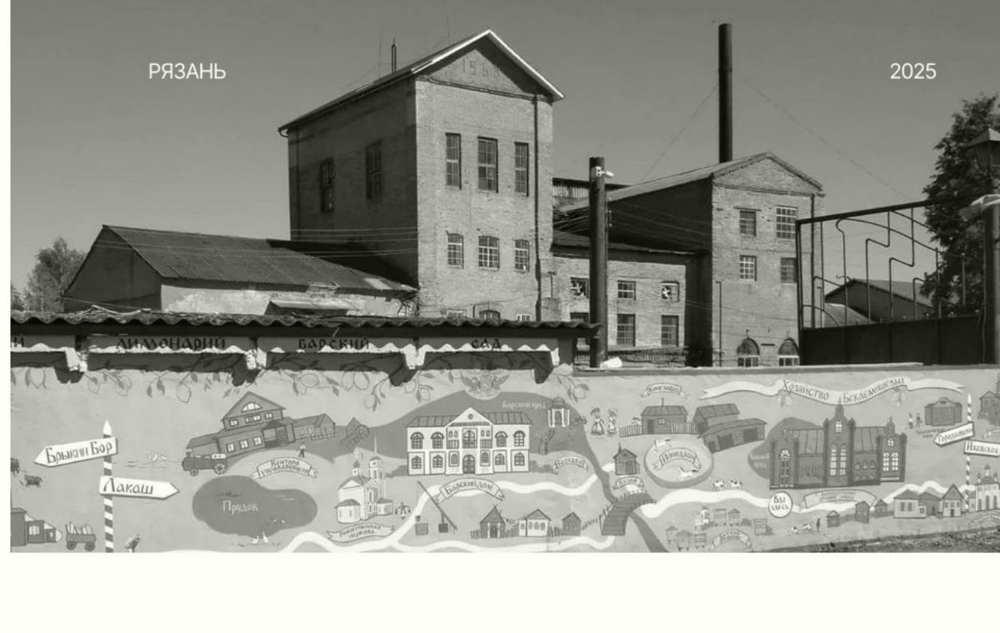

Глава III
Завод

Красный кирпич, высокие окна, толстые стены, которые держат прохладу летом. Здание построили как винокуренный завод при усадьбе Беклемишевых, по проекту немецкого инженера Франца Круля. Лакашинские бондари, чьи бочки расходились по всей России, жили в соседнем селе.
Сегодня в этих стенах варочный цех, бродильня, склад и небольшой музей. Приезжайте на экскурсию: покажем цех и дадим попробовать всё, что налито.
- 1911винокуренный завод Беклемишевых
- 2015первые варки линейки Alter Brauch
- 2017бар Alter Brauch на Почтовой в Рязани
- 2021заводу 110 лет
- 2025новая линейка: лагер, пшеничное, пэйл‑эли, стаут, сидр, медовуха
Медь, нержавейка, 100 % солод
- Затирание и варка: технологи вручную составляют купажи солода и хмеля. Хмель немецкий, американский и русский.
- Брожение в отдельных ёмкостях из нержавеющей стали, по классической схеме.
- Дображивание при своих температурах для каждого напитка. Не фильтруем, не пастеризуем.